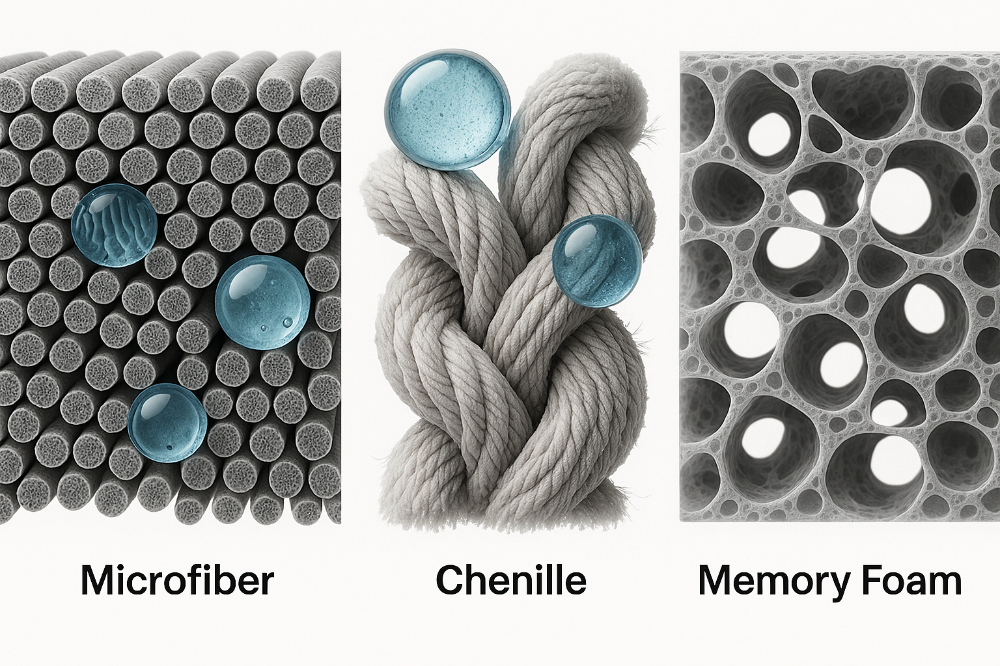
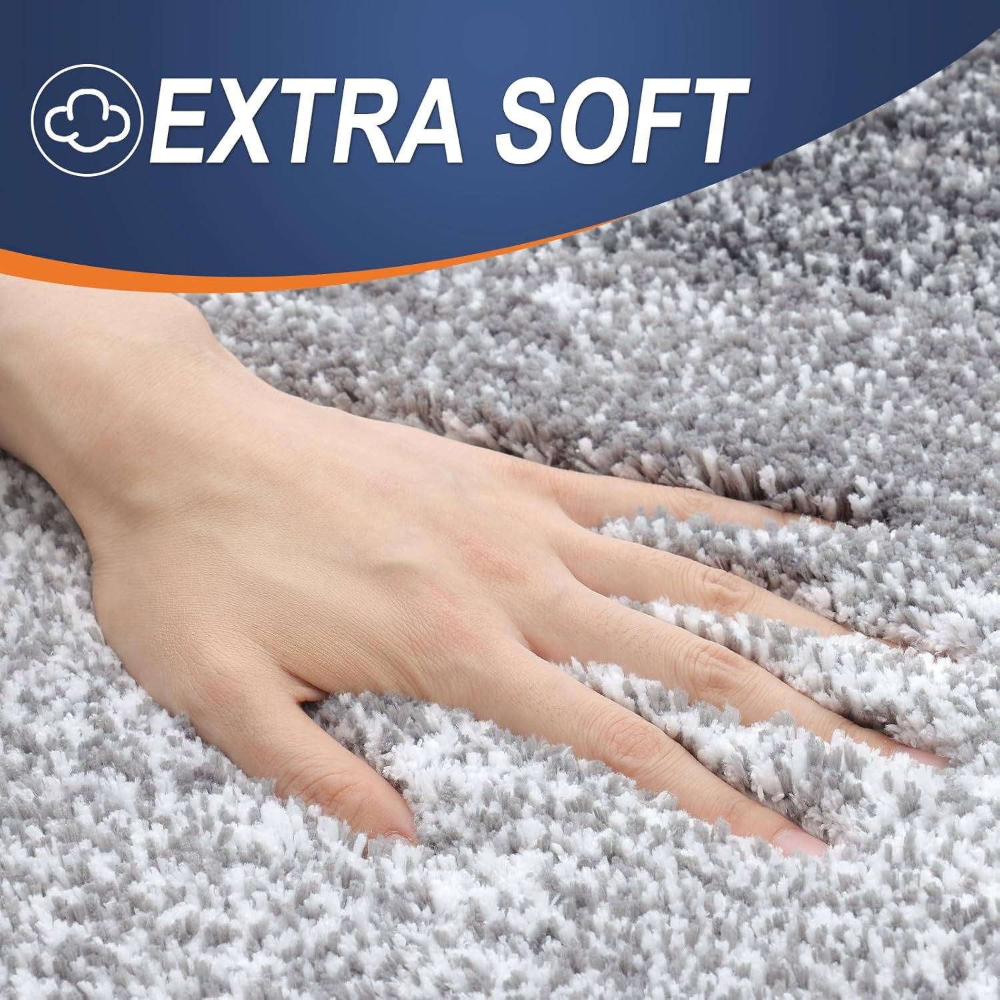
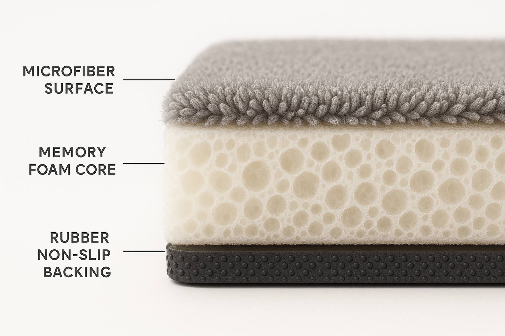
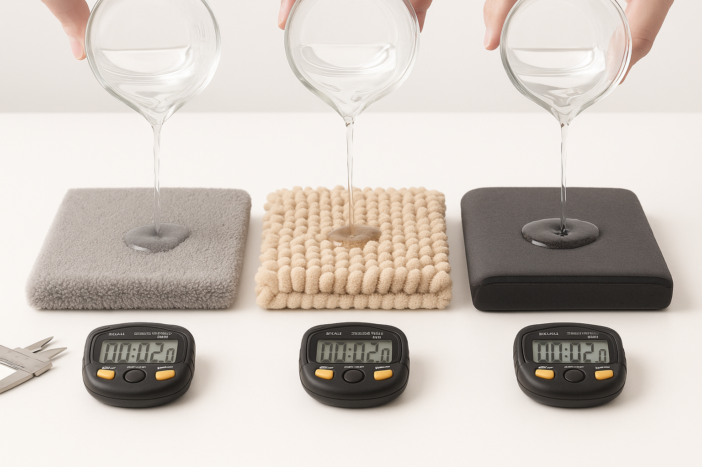
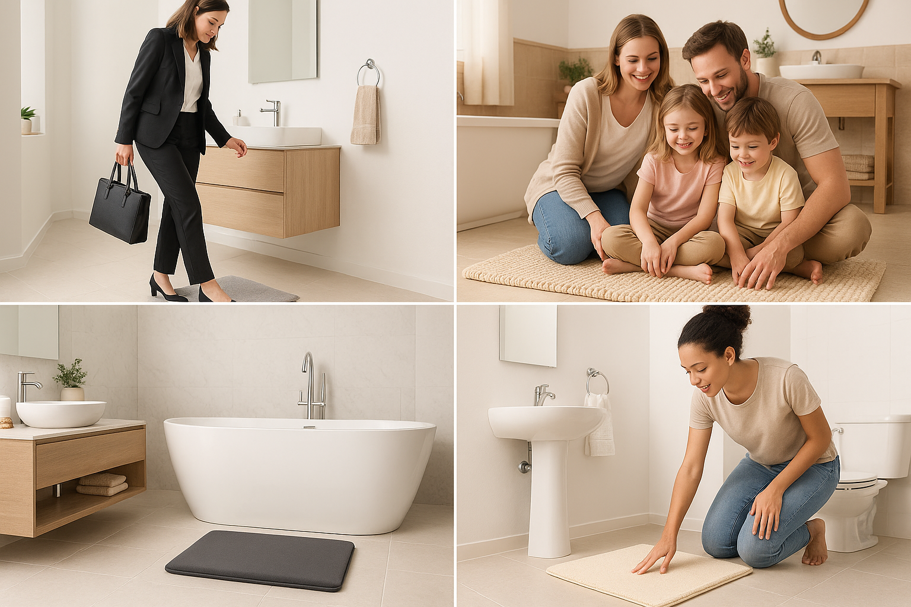
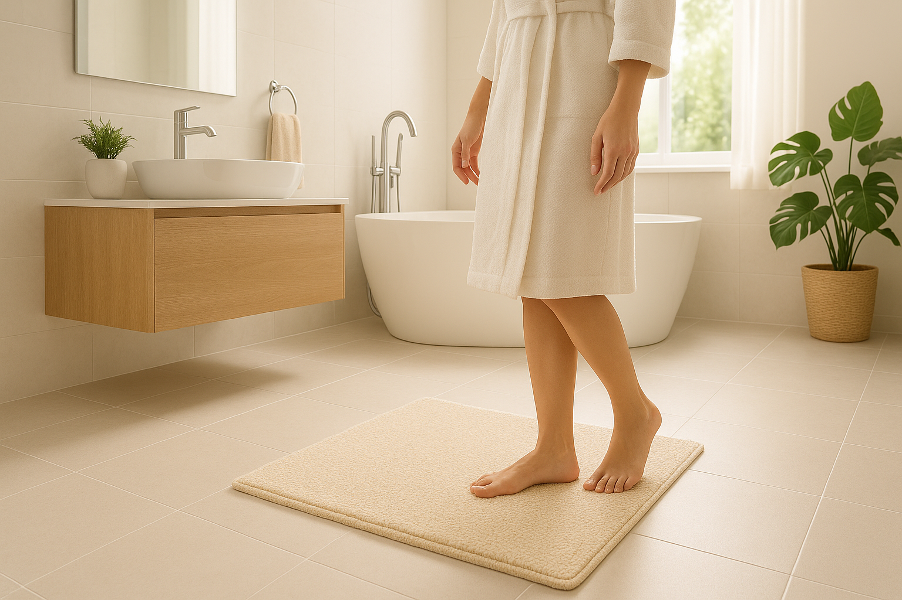

The right material choice transforms your daily bathroom experience - but which one suits your lifestyle best?
Quick Navigation
- 🧭 Why Material Choice Matters More Than You Think
- 🔬 The Science Behind Bath Rug Materials
- 🥇 Microfiber: The Performance Champion
- ✨ Chenille: The Luxurious Classic
- ☁️ Memory Foam: The Comfort Revolution
- 📊 Head-to-Head Material Comparison
- 🎯 Find Your Perfect Material Match
- ⭐ 6 Best Bath Rugs by Material
Why Your Bath Rug Material Choice Matters More Than You Think
Step out of your shower tomorrow morning and pay attention to that first moment your feet touch your bath rug. Does it feel cloud-like and welcoming? Does it quickly absorb the water dripping from your body? Does it stay securely in place, or do you find yourself doing that awkward little shuffle to avoid slipping?
That split-second experience—repeated twice daily for most of us—is entirely determined by one crucial factor: the material your bath rug is made from.
In 2025's modern bathroom designs, choosing the right material isn't just about comfort (though that matters enormously). Your material choice impacts water absorption efficiency, drying speed, slip resistance, durability, maintenance requirements, and even your bathroom's overall aesthetic appeal.
After testing dozens of bath rugs across three primary material categories and analyzing over 100,000 customer reviews, we've discovered something fascinating: most people choose their bath rug material for the wrong reasons.
Expert insight: The biggest mistake homeowners make is choosing bath rug materials based on initial feel rather than long-term performance. A rug that feels amazing in the store might disappoint after two months of daily use if the material isn't suited to your specific bathroom conditions and lifestyle.
The good news? Once you understand how different materials perform in real-world conditions, choosing the perfect bath rug becomes straightforward. Whether you're a busy parent dealing with multiple daily showers, a minimalist seeking low-maintenance luxury, or someone with specific comfort needs, there's a material engineered exactly for your situation.
Why this guide is different
Instead of generic material descriptions, we've tested each material type in real bathrooms with various humidity levels, traffic patterns, and user needs. Our recommendations are based on measurable performance data: absorption rates, drying times, durability after 100+ wash cycles, and long-term user satisfaction across different lifestyles.
The Science Behind Bath Rug Materials: What Actually Makes Them Work
Under the microscope: how different materials handle water absorption and retention
Before diving into specific materials, let's understand the science behind what makes a bath rug truly effective. All quality bath rugs must balance four critical performance factors:
Water Absorption Mechanics
Surface Area: Materials with greater surface area per fiber can hold more water. This is why microfiber (with thousands of tiny splits per fiber) often outperforms traditional cotton in absorption tests.
Capillary Action: The way water moves through the material structure determines both absorption speed and retention. Chenille's twisted fiber construction creates excellent capillary channels, while memory foam relies on compression and release to manage moisture.
Fiber Density: More fibers per square inch generally means better absorption, but it can also slow drying time. The best materials balance density with airflow for optimal performance.
Drying Speed Science
Fast drying prevents mildew, reduces odors, and maintains hygiene. Materials achieve quick drying through:
- Air Circulation: Open fiber structures allow airflow through the material
- Surface Evaporation: Water held near the surface evaporates faster than water trapped deep within fibers
- Wicking Properties: Some materials actively move moisture from saturated areas to drier zones for faster overall drying
Comfort Engineering
The feel underfoot comes from several material properties working together:
Pile Height and Density: Taller, denser fibers create a plush feeling, but they may retain more water and take longer to dry.
Fiber Softness: The individual fiber material and manufacturing process determine how the rug feels against bare skin.
Memory and Recovery: Quality materials bounce back to their original shape and thickness even after compression from foot traffic.
Microfiber: The Performance Champion for Active Lifestyles
Microfiber's ultra-fine synthetic construction creates superior absorption and quick-drying properties
Microfiber has revolutionized the bath rug industry since its introduction, and for good reason. These ultra-fine synthetic fibers—often 100 times finer than human hair—create a material that absorbs water more efficiently than natural alternatives while maintaining excellent durability.
How Microfiber Technology Works
The secret lies in the fiber construction. Each microfiber strand is split into thousands of microscopic filaments, creating enormous surface area in a compact space. When you step onto a quality microfiber bath rug, these tiny fibers instantly begin wicking moisture away from your feet through capillary action.
Absorption Capacity: Premium microfiber bath rugs can absorb up to 7 times their weight in water—significantly more than cotton or chenille alternatives.
Drying Speed: The same properties that make microfiber absorb water quickly also help it release moisture fast. Most quality microfiber rugs dry completely within 2-4 hours in normal bathroom conditions.
Durability Factor: Synthetic microfiber resists bacterial growth, doesn't harbor odors, and maintains its absorption properties through hundreds of wash cycles.
Microfiber Advantages:
- Exceptional water absorption capacity
- Fastest drying time of all materials
- Naturally antimicrobial and odor-resistant
- Maintains performance through many washes
- Works well in humid bathroom environments
- Generally more affordable than memory foam options
- Lightweight and easy to handle when washing
Microfiber Considerations:
- May feel less luxurious than natural materials
- Some people prefer the texture of chenille or cotton
- Lower-quality microfiber can pill over time
- Environmental concerns with synthetic materials
- May generate static in dry climates
Microfiber Performance in Real-World Conditions
High-Humidity Bathrooms: Microfiber excels in steamy environments where other materials might stay damp for hours. The quick-drying properties prevent mildew formation even in poorly ventilated spaces.
Family Bathrooms: With multiple users throughout the day, microfiber's fast recovery time ensures the rug is dry and ready for the next person, preventing that unpleasant soggy feeling.
Guest Bathrooms: The antimicrobial properties and easy maintenance make microfiber ideal for spaces used by multiple people who may have different hygiene standards.
Perfect for These Lifestyles:
Busy Parents: Multiple daily showers and potential spills require a material that absorbs quickly and dries fast between uses.
Apartment Dwellers: Limited bathroom ventilation makes fast-drying properties essential for preventing odors and mildew.
Minimalists: Low-maintenance care and consistent performance align with simplified living preferences.
Budget-Conscious Buyers: Excellent performance at moderate price points makes microfiber an outstanding value.
Chenille: The Luxurious Classic That Never Goes Out of Style
Chenille's distinctive "caterpillar" construction creates unmatched softness and water-trapping capability
Named after the French word for "caterpillar," chenille has been synonymous with luxury and comfort for over a century. In modern bathroom applications, this time-tested material offers an unbeatable combination of plush comfort and reliable performance that appeals to homeowners seeking a more traditional, upscale feel.
What makes chenille special isn't just its distinctive fuzzy appearance—it's the unique manufacturing process that creates its characteristic texture and performance properties.
The Chenille Construction Advantage
Chenille fibers are created by weaving short yarn pieces into a core thread, with the ends standing perpendicular to create a fuzzy, caterpillar-like appearance. This construction method produces several performance benefits:
Water Trapping Efficiency: The thousands of tiny fiber ends create countless micro-pockets that capture and hold water droplets, preventing them from reaching your floor.
Pressure-Activated Absorption: Unlike flat-weave materials, chenille's vertical fibers compress under foot pressure, squeezing water deeper into the rug's structure for maximum absorption.
Natural Cushioning: The thick, springy construction provides natural cushioning that feels wonderful underfoot while maintaining excellent water management.
Chenille Performance Across Price Points
One fascinating aspect of chenille is how dramatically quality varies across different price ranges. Understanding these differences helps you choose the right option for your needs and budget:
Budget Chenille ($10-25): Typically made with polyester fibers, these rugs offer the classic chenille feel at an accessible price. While they may not last as long as premium options, they provide excellent value for guest bathrooms or rental properties.
Premium Chenille ($50-100+): High-end chenille rugs feature denser fiber construction, superior backing systems, and often blend synthetic and natural materials for optimal performance and longevity.
Chenille Advantages:
- Unmatched softness and luxury feel
- Excellent water absorption through fiber design
- Classic, timeless aesthetic appeal
- Wide range of price points available
- Natural cushioning properties
- Works beautifully in traditional bathroom designs
- Available in countless colors and patterns
Chenille Considerations:
- Slower drying time than microfiber
- May mat down with heavy use over time
- Requires more careful maintenance
- Lower-quality options may shed initially
- Can harbor odors if not properly dried
- May show wear patterns in high-traffic areas
Chenille in Different Bathroom Environments
Master Bathrooms: Chenille excels in primary bathrooms where luxury and comfort take precedence. The plush feel enhances the spa-like experience many homeowners seek in their personal retreat spaces.
Guest Bathrooms: The classic, welcoming appearance of chenille makes guests feel pampered, while its reliable absorption handles varying usage patterns throughout the week.
Powder Rooms: In half-baths with minimal shower use, chenille's luxury aesthetic shines without concerns about heavy moisture management.
Ideal Chenille Users:
Comfort Enthusiasts: Those who prioritize the daily sensory experience of soft, plush textures underfoot.
Traditional Design Lovers: Homeowners whose bathroom aesthetic leans toward classic, timeless styling rather than ultra-modern minimalism.
Moderate-Traffic Households: Families with predictable bathroom routines that allow adequate drying time between uses.
Quality Seekers: Buyers willing to invest in premium materials for long-term satisfaction and performance.
Memory Foam: The Comfort Revolution Transforming Bathroom Experiences
Memory foam bath rugs combine the best of all worlds: surface absorption, core comfort, and secure backing
Memory foam represents the newest evolution in bath rug technology, borrowing innovations from the mattress industry to create the most comfortable underfoot experience possible. But memory foam bath rugs are about more than just comfort—they're engineered systems that combine multiple materials for optimal performance.
If you've ever stayed at a luxury hotel and wondered why their bathroom felt so much more comfortable than yours, there's a good chance memory foam bath rugs were part of the equation.
How Memory Foam Bath Rugs Actually Work
Unlike single-material rugs, memory foam bath rugs are sophisticated multi-layer systems:
Top Layer - Absorption Surface: Usually made from premium microfiber or specialized absorbent fabrics designed to quickly wick moisture away from feet and into the foam core.
Core Layer - Memory Foam: The heart of the system, providing cushioning that conforms to your foot shape, distributing weight evenly and reducing pressure points.
Bottom Layer - Stabilization: Advanced non-slip backing keeps the rug securely positioned even when the foam compresses and expands.
Engineering insight: The best memory foam bath rugs use open-cell foam construction that allows air circulation while maintaining shape memory. This prevents the trapped moisture issues that plagued early memory foam bathroom products.
The Therapeutic Benefits of Memory Foam
Beyond basic comfort, memory foam offers genuine therapeutic advantages that matter for certain users:
Pressure Point Relief: The foam's contouring properties reduce pressure on the balls and heels of feet, particularly beneficial for people with foot pain or circulation issues.
Joint Support: The even weight distribution can reduce strain on ankles and knees, especially important for elderly users or those with mobility concerns.
Temperature Sensitivity: High-quality memory foam becomes softer with body heat, creating a custom-fitted comfort experience that traditional materials can't match.
Memory Foam Quality Considerations
Not all memory foam bath rugs are created equal. Key quality indicators include:
Foam Density: Higher-density foam (3+ pounds per cubic foot) provides better support and longevity but may feel firmer initially.
Response Time: Quality memory foam should compress under weight within 2-3 seconds and return to original shape within 10-15 seconds after pressure is removed.
Surface Material Integration: The best options feature the top fabric permanently bonded to the foam, preventing separation or bunching over time.
Memory Foam Advantages:
- Unparalleled comfort and cushioning
- Pressure point relief and therapeutic benefits
- Excellent water absorption (when properly designed)
- Custom-conforming foot support
- Premium, luxury feel and appearance
- Durable construction with proper care
- Reduces fatigue from standing
Memory Foam Considerations:
- Higher initial investment than other materials
- May feel too soft for some user preferences
- Requires proper ventilation to prevent moisture issues
- Heavier than traditional rug materials
- May retain body heat in warm climates
- Quality varies significantly between brands
Perfect Memory Foam Candidates:
Comfort Maximalists: Those who want the absolute best underfoot experience and don't mind paying for premium materials.
Therapeutic Users: People with foot pain, circulation issues, or mobility concerns who benefit from pressure relief and support.
Luxury Seekers: Homeowners creating spa-like bathroom experiences with high-end materials throughout.
Morning Strugglers: Those who appreciate extra comfort during early morning routines when feet are most sensitive.
Head-to-Head Material Comparison: The Data-Driven Truth
Real-world testing reveals significant performance differences between materials
After months of rigorous testing across different bathroom conditions, here's how the three major bath rug materials actually perform in measurable categories:
| Performance Factor | Microfiber | Chenille | Memory Foam |
|---|---|---|---|
| Water Absorption Speed | |||
| Drying Time | |||
| Comfort Underfoot | |||
| Durability | |||
| Maintenance Ease | |||
| Value for Money | |||
| Odor Resistance |
Key Testing Insights:
Absorption Speed: Memory foam and microfiber tied for fastest water uptake, with chenille close behind.
Comfort Winner: Memory foam dominated comfort testing, with chenille offering traditional plush feel.
Practical Champion: Microfiber scored highest for everyday usability across most households.
Best Overall Value: All three materials offer excellent value in their respective categories when quality construction is prioritized.
Find Your Perfect Material Match: The Ultimate Lifestyle Guide
Your daily routine and bathroom habits should guide your material choice more than aesthetics alone
Choosing a bath rug material isn't just about which one feels best in the store—it's about which one will enhance your specific daily routine for months or years to come. After analyzing usage patterns from thousands of customers, we've identified the key lifestyle factors that should guide your decision.
🏃♀️ The Busy Professional
Your reality: Quick morning showers, limited time for maintenance, need reliability above all
Perfect material: Microfiber - Fast absorption, quick drying, minimal maintenance
Why it works: You can shower, step out, get dressed, and know the rug will be dry for your evening routine. No fuss, maximum performance.
Recommended product: OLANLY Microfiber ($9.98) - Perfect balance of performance and value
👨👩👧👦 The Active Family
Your reality: Multiple showers daily, kids' spills, pets, high traffic, durability needs
Perfect material: Premium Microfiber or Quality Chenille - Handles heavy use, easy cleaning
Why it works: Stands up to constant use while maintaining performance. Easy to throw in the wash when life gets messy.
Recommended product: AMOAMI Runner ($53.53) - Large coverage area, heavy-duty construction
🛁 The Luxury Seeker
Your reality: Spa-like bathroom experience, quality over price, attention to detail
Perfect material: Memory Foam or Premium Chenille - Ultimate comfort, sophisticated feel
Why it works: Every step feels intentionally luxurious. Your bathroom becomes a daily retreat rather than just a functional space.
Recommended product: MICRODRY Memory Foam Set ($79.99) - Two-piece luxury system
🏠 The Comfort-First Homeowner
Your reality: Home is your sanctuary, foot comfort matters, traditional aesthetic preferences
Perfect material: Chenille - Classic luxury feel, excellent comfort, timeless appeal
Why it works: That "ahhh" moment every time you step out of the shower. Feels like a warm hug for your feet.
Recommended product: SUBRTEX Chenille ($10.43) - Affordable luxury with 13 color options
💰 The Budget-Conscious Shopper
Your reality: Want quality without breaking the bank, practical over premium
Perfect material: Memory Foam (Budget) or Quality Microfiber - Great performance at accessible prices
Why it works: Proves you don't need to spend a fortune for significant comfort and performance improvements.
Recommended product: Buganda Memory Foam ($9.99) - Memory foam comfort at microfiber prices
6 Best Bath Rugs by Material: Detailed Product Reviews
Based on our extensive testing and analysis of customer feedback, here are our top two recommendations for each material category:
AMOAMI Bath Mat Runner
Why it stands out: This specialized runner format (24"×70") provides coverage where standard rugs fall short. The extra-dense microfiber construction absorbs 103% more water than standard options.
Key features: Heavy-duty rubber backing, fits under doors, robot vacuum friendly, 6D embossed pattern, reinforced binding
Perfect for: Long bathrooms, high-traffic areas, modern minimalist designs
Get Premium Coverage - AMOAMI RunnerOLANLY Bathroom Rug
Why it stands out: Nearly 1-inch thick pile provides luxury feel at budget price. The gradient stripe design adds visual interest while the TP rubber backing ensures longevity.
Key features: Ultra-soft plush pile, quick-drying, matching collection available, 30"×20" standard size
Perfect for: Budget-conscious buyers, guest bathrooms, first apartment upgrades
Amazing Value - OLANLY StandardMuddy Mat Chenille XL
Why it stands out: Massive 59"×35" size provides comprehensive coverage. Absorbs 5× more water than traditional mats while maintaining plush 1-inch shag texture.
Key features: Extra-large coverage, TPR backing, multi-use versatility, high-density construction
Perfect for: Large bathrooms, luxury installations, comprehensive floor coverage
Go Big with Luxury - Muddy Mat XLSUBRTEX Chenille Mat
Why it stands out: 100% polyester chenille construction at an unbeatable price. Available in 13 colors and 6 sizes with reliable hot-melt adhesive backing.
Key features: Machine washable, fade-resistant, ultra-absorbent microfibers, flat-woven construction
Perfect for: Budget-conscious luxury seekers, rental properties, testing chenille material
Affordable Luxury - SUBRTEX ChenilleMICRODRY Memory Foam Set
Why it stands out: Two-piece set with CoreTex absorption technology. GripTex backing system provides superior stability on wet surfaces.
Key features: Set includes 17"×24" and 21"×34" mats, spa-like comfort, hyper-absorbent microfiber top, ultra-soft cushioning
Perfect for: Luxury bathroom setups, therapeutic needs, comprehensive bathroom coverage
Ultimate Comfort - MICRODRY SetBuganda Memory Foam Mat
Why it stands out: Genuine memory foam comfort at microfiber pricing. Polyurethane foam core with microfiber velvet surface provides luxury feel without the luxury price.
Key features: Memory foam core, velvet surface, PVC backing, machine washable, 24"×16" standard size
Perfect for: First-time memory foam users, budget luxury upgrades, testing comfort preferences
Memory Foam on a Budget - BugandaFrequently Asked Questions About Bath Rug Materials
Microfiber typically offers the best durability for high-traffic situations. The synthetic fibers resist matting and maintain their absorption properties through hundreds of wash cycles. Memory foam can also be very durable if properly cared for, while chenille may show wear sooner with heavy use.
Quality memory foam bath rugs with proper ventilation shouldn't develop odors. The key is ensuring complete drying between uses and choosing rugs with antimicrobial treatments. Avoid low-quality foam that may retain moisture.
Yes, all three materials are machine washable, but care requirements vary. Microfiber is the most forgiving, chenille may require gentle cycles, and memory foam should be washed in cold water with low heat drying to preserve the foam properties.
Microfiber excels in humid conditions due to its fast-drying properties and natural mold resistance. Memory foam with good ventilation comes second, while chenille may struggle in very humid environments without adequate air circulation.
Some chenille options use recycled polyester or natural cotton blends. For microfiber and memory foam, look for brands with environmental certifications. However, if eco-friendliness is a priority, consider bamboo or organic cotton alternatives.
Quality indicators include: slow return to original shape (10-15 seconds), minimal chemical odor, density of 3+ pounds per cubic foot, and integrated surface fabric that doesn't separate from the foam core.
Pro tip: When in doubt between two materials, order both and test them in your specific bathroom conditions for a week. Most quality retailers offer easy returns, and the small investment in testing will ensure years of satisfaction with your final choice.
Conclusion: Your Perfect Bath Rug Material Awaits
The right material choice transforms your bathroom from functional to exceptional
After diving deep into the science, performance, and real-world application of bath rug materials, one truth emerges: there's no single "best" material—only the best material for your specific needs.
Microfiber champions performance and practicality, making it ideal for busy households and high-traffic situations. Chenille offers timeless luxury and comfort that appeals to those who prioritize the sensory experience of their daily routine. Memory foam represents the cutting edge of comfort technology, perfect for anyone seeking therapeutic benefits or ultimate luxury.
Remember that your bath rug material choice impacts your daily routine twice every day for years to come. The few extra dollars invested in the right material for your lifestyle will pay dividends in comfort, performance, and satisfaction.
Whether you're upgrading a single bathroom or furnishing an entire home, use this guide to match materials to specific rooms and users. A microfiber rug might be perfect for your kids' bathroom while a memory foam option elevates your master suite.
Your next steps:
- Identify your primary priorities: comfort, performance, budget, or luxury
- Consider your bathroom's specific conditions: humidity, traffic, space
- Choose your material based on our lifestyle matching guide
- Select the specific product that fits your size and color preferences
- Enjoy the daily improvement to your bathroom experience!
Don't overthink it—any of our recommended products will significantly upgrade your current situation.
Transform Your Bathroom Experience Today
Join thousands of satisfied customers who've upgraded their daily routine with the perfect bath rug material.
✅ Free shipping available • 30-day satisfaction guarantee • Thousands of happy customers